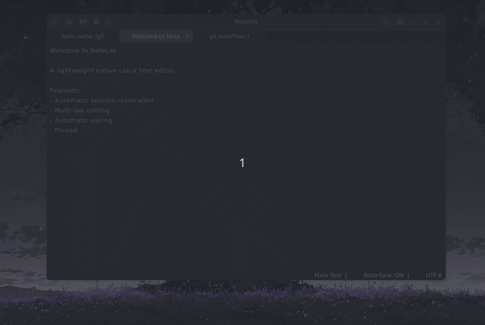

A lightweight Notepad-style application for Linux, built around automatic session restoration, multi-tab editing, and persistent local storage.

While using Linux, I wanted a simple, lightweight Notepad-style application that could preserve my working session between launches.
Instead of adapting my workflow around the limitation, I decided to build the tool I wanted myself.
The goal was to create a native Linux application that could open quickly, support multiple notes, and restore the previous session automatically.
The application persists the user's open notes and restores the previous working session when NoteLet is launched again.
Implemented multi-tab note editing so multiple notes can be managed seamlessly within a single application window.
Notes and application preferences are stored locally using a structured JSON-based persistence system.
Built the application using GTK4 and Libadwaita to provide an authentic, modern Linux desktop experience.
NoteLet
│
┌────────┴────────┐
│ │
UI Layer Application Logic
│ │
└────────┬────────┘
│
Persistence
│
JSON
GTK4 + Libadwaita
↓
Application State
↓
Session Manager
↓
JSON Persistence
The application needed to remember the user's open notes and restore them accurately after the application closed.
I separated persistent session state from the UI state, allowing the application to serialize the required information and cleanly reconstruct the session during startup.
Multiple tabs require independent note state while still being safely managed by a single unified application controller.
Designed the application around modular state management so individual notes and the overall session lifecycle could be handled independently.